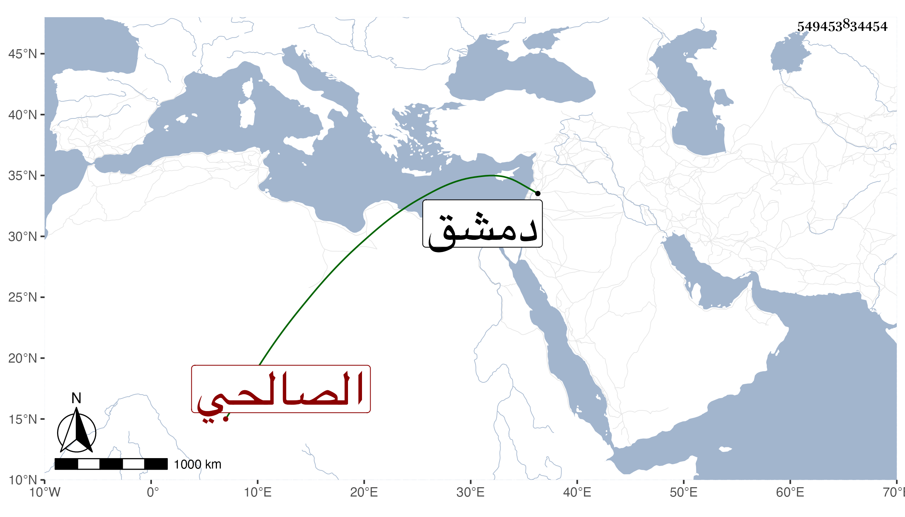

0902Sakhawi.DawLamic.ITO20230111-ara1.EIS1600.549453834454
Biography ID: 549453834454
317
أحمد بن محمد بن أبي بكر بن عمر بن إسماعيل بن عمر بن السلار الشهاب الصالحي ابن أخي الشيخ ناصر الدين إبراهيم . ولد في العشر الأول من ذي الحجة سنة اثنتين وعشرين وسبعمائة ، وسمع من الشرف بن الحافظ وابن التائب ومحمد بن أحمد بن راجح وغيرهم ، وأحضر على الحجار جزء أبي الجهم ، وأجاز له أيوب بن نعمة الكحال وجماعة وحدث سمع منه الحافظ الغرس الأقفهسي ، أجاز لي من دمشق . ومات في سابع عشر ذي الحجة سنة إحدى . ذكره شيخنا في معجمه وأنبائه ثم المقريزي في عقوده .
